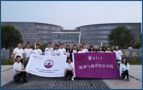
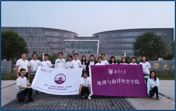
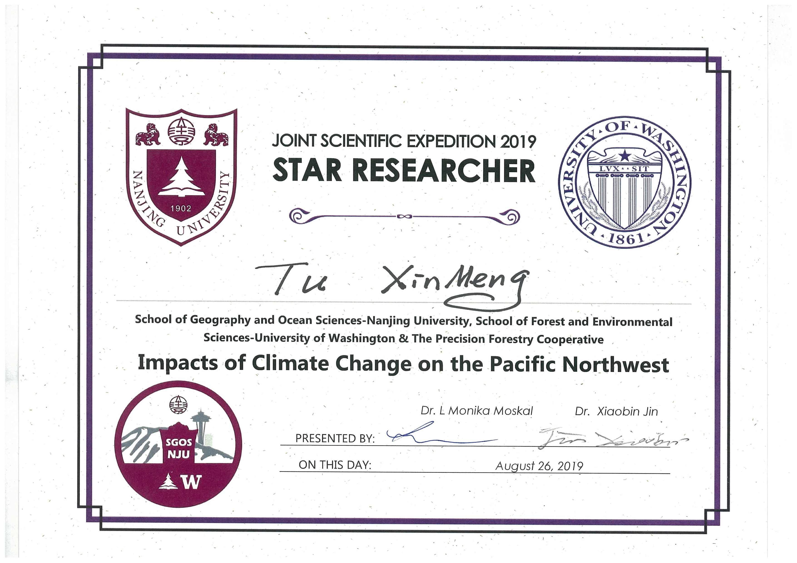
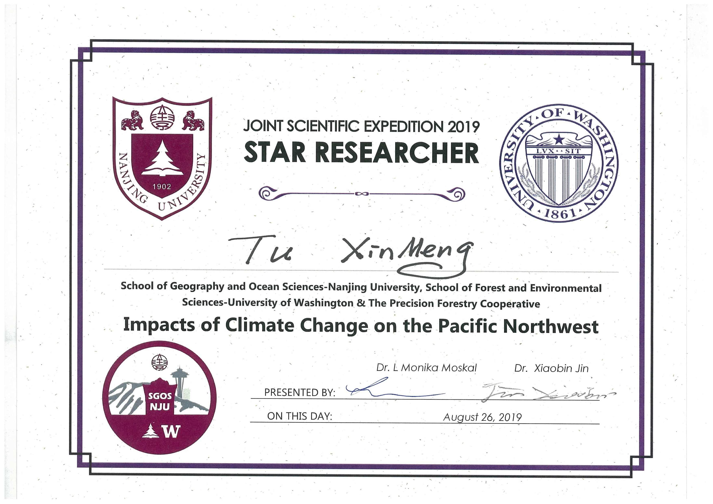
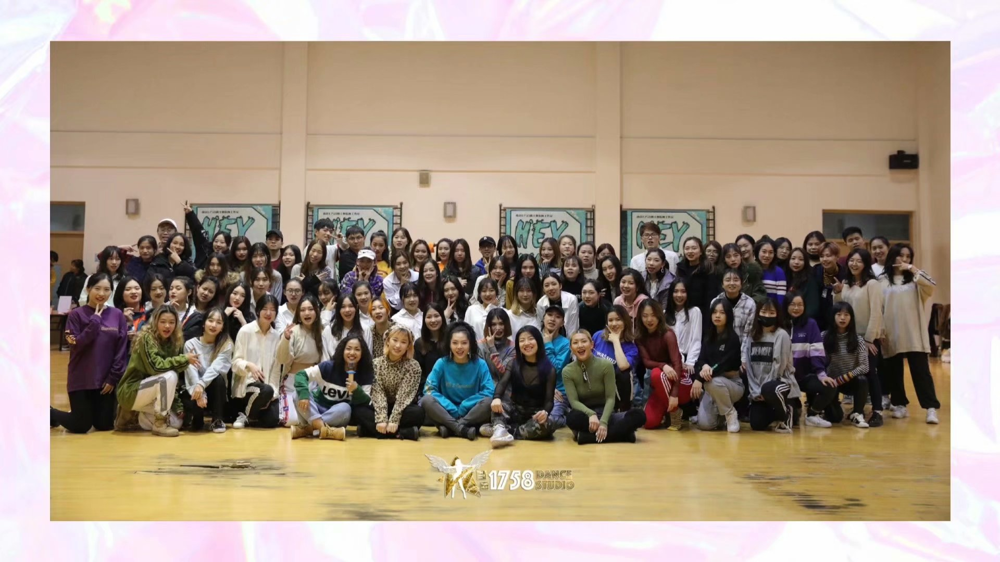

Xinmeng Tu
junior/ School of Geography and Ocean Science, Nanjing University / major: GIS (Geographic Information Science) / research interest: about land use change and spatial temporal data mining.
Research Experience
Zhenjie Chen's research group
At the end of the second semester of my freshman year, I joined Mr. Chen's research group and began to engage in my first scientific research. My research project is about the application of spatio-temporal data mining tools to land use.
Guang Zheng's research group
In the second semester of my sophomore year, in order to prepare for the international scientific investigation in Washington State in summer, I joined Mr. Zheng's research group and started a project on multi-source remote sensing.
Publication
Analyzing geographical characteristics of straw burning in China during the past 5 years
Objectively and precisely depicting the spatial distribution characteristics of straw burning is of great significance to scientifically guide the prohibition of str aw burning and improve the efficiency of administrative supervision. Based on Satsee-Fi re point data sets in China during 2014 to 2018 year, natural environment and populatio n-economy data, China straw fire points database and nature-population-economics database established by terrain, social and economic data, this study uses GIS analysis tools and mathematical statistics methods to analyze the distribution chara cteristics of straw burning fire points in China during the recent 5 years under the i nfluences of 9 factors in 3 aspects including terrain, public transport and the popul tion-economy, the results showed that...
Mar 2019
Geographical Research
(published)
1st Award Forum of Sciences & Arts of Nanjing University
Spatial and temporal patterns of open straw burning in CHINA from 2014 to 2018
Investigating the distribution and spatio-temporal patterns of open straw burning on a macro scale over a long period of time, it will provide a theoretical reference for scientifically regulating the prohibition of crop straw burning and improving the efficiency of policy...
June 2019
Renewable Energy
(published)
Temporal and spatial changes of burning point of straw in China from 2014 to 2018
Understanding the changes in field straw-burning at national scale over a comparatively long period is essential to improving straw management and helping its administrative supervision. Using the Stasee-Fire data from 2014 to 2018 in China, we constructed a dataset of field straw-burning in China after data conversion, extraction, cleaning and other processing. We then analyzed its spatiotemporal changes at different scales over the past five years using the central gravity-moving model, spatial autocorrelation model and the K-mean clustering model...
Oct 2019
Transactions of the Chinese Society of Agricultural Engineering
(published)
Analysis of influencing factors of crop straw treatment based on questionnaire survey of farmers
--
July 2019
Resource Science
(under review)
Regional Pattern Mining of Land Use with Adaptive Adjacent Criteria
Regional patterns of land use can explain social, environment, institutional and economic processes and thus have innumerable research value. Nonetheless, these patterns need great efforts to discover, because of their variances with space owing to spatial heterogeneity resulting from diverse geographic characteristics. Aimed at solving the difficulties above, we proposed a regional pattern mining method to discover spatial-temporal association rules of land use...
Oct 2019

Cartography and Geographic Information Science
(under review)
Combining time-series spectral information and lidar data for identifying types of forest disturbances in temperate forest
The spatially explicit forest disturbance time series maps and the forest disturbance categories resulted from wildfire, insects, deforestation and afforestation play an important role in the studies of global carbon cycle and climate change. While identifying the driving factors and social-economic effects of the forest disturbance is a key step to better understand the forest disturbances in practice. Upon this, our research aimed at three goals
Mar 2019 -- (in progress)

Education
Nanjing University
GPA: 4.63 / 5
Rank: 1 / 57
Position:
Monitor of GIS class (2017-2018),
League branch secretary of GIS class (2019- ),
Freshman mentor (2019- )
TOEFL: 104
GRE: 161+170 = 331
Competition
"Challenge Cup" National College Student Extra-curricular Academic Science and Technology Works Competition
1st Award in Jiangsu Province
Geographical Exhibition Competition
2nd Award in Northern Division
Innovation and Creative Competition of School of Geography and Ocean Science

Practice
Commonweal Micro Film
Social Practice about Garbage Classification

Geological field practice
Geographical field practice

Joint Scientific Expedition 2019 -- Nanjing University & University of Washington
 

 

Volunteering and Club Activity
Volunteering
Programs: 30+
- Guiding volunteer in Nanjingnan Railway Station
- Remained elderly visiting
- Handmade teaching for the elderly
- Environmental charity sale
- ...


Club Activity
serve as Captain in Passion Street Dance Club
Passion is one of the top ten clubs in NJU. I am in charge of things like team trainings, competitions, promo filming, etc.



- Welcome Party for Geoscience Freshman
- Campus Top Ten Singers Competition
- "Wudong Maricle" Party
- 12th Anniversary Celebration of Passion
- 13th Anniversary Celebration of Passion
-
Millitary Training Party
...


Awards & Certifications
-
National Scholarship

-
Merit student of Jiangsu Province

-
Duxia Scholarship (8 individuals per year)
-
1st Award
Forum of Sciences & Arts of Nanjing University

-
Excellent student in NJU

-
Excellent League member in NJU
-
Excellent student in social practice

-
Student aid ambassador in NJU

-
Freshman mentor
-
Leader of excellent team in Nan Xing Dream Plan
-
...